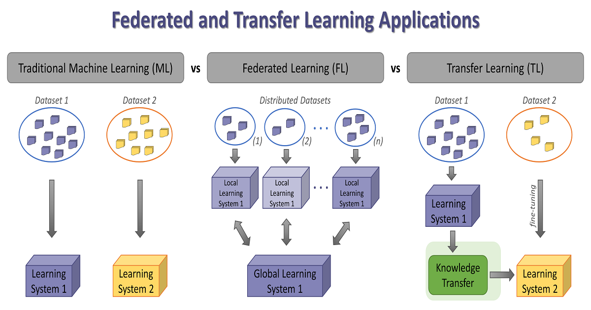
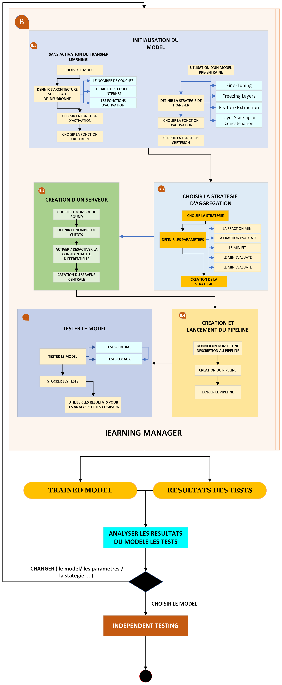

Introduction
MEDfl is a new python package, which is a hybridization of Flower and Opacus,
while getting inspired by the Pysyft framework, the main strengths of MEDfl is that
both users and developpers will benifit from all features of the three listed frameworks.
Real world scenario
Martin is an AI researcher, his main interest is the applications of AI into the healthcare domain. Recently, he has recieved a call from a prestigious institute, in order to make a study about the realisation of a new project. The project’s goal is designing and developping a federated learning system between a set of hospitals, and that by training and using a deep learning model with preserving the privacy of all patient records.
When Martin finished the first analysis of the project statement, he realized that the project involve the use of Federated Learning, Differential Privacy within a good storage monitoring system.
Fortunately, Martin knows MEDfl, and he is pretty sure that it’s designed for such tasks, and it will be do the desired work.
MEDfl with his two main sub-packages, NetManager , LearningManager , let us designing FL expirements and simulating real world scenarios, and that by using differents options to make differents FL architectures (or setups) as well as using differents FL pipelines.
Database management
In this tutorial, we’ll demonstrate how to initialize your database and establish its connection to MEDfl. Subsequently, we’ll explore the step-by-step process of storing various pieces of information.
Our choice for utilizing MySQL as the database system is due to its robust features, reliability, and widespread adoption in the industry. Its strong support for structured query language (SQL) and its scalability make it an ideal choice for managing the diverse data sets and configurations within MEDfl.

Before beginning, ensure that you have installed MySQL and one of the servers, such as WAMP or XAMPP , and have them running.
To visualize your database, you can open PHPMyAdmin <https://www.phpmyadmin.net>, a web-based tool that allows for convenient management and visualization of your database.
{kind=link}
{kind=link}
{kind=link}
You can also find this tutorial on the repository Database management tutorial
NetManager
The NetManager module within MEDfl is responsible for the generation of federated learning networks. It relies on a CSV file containing a DataSet as input. Leveraging this Dataset file, the module creates various nodes within the network, assigns a dataset to each node, and generates the federated dataset for each node. Subsequently, these federated datasets are transferred to the subsequent package, Learning Manager.
The NetManager workflow involves five primary steps:
Network creation
DataSets storage
Nodes Creation
FLsetup Creation
Federated DataSet Creation
{kind=link}
Transfer Learning
This notebook demonstrates the process of integrating Transfer Learning using the MEDfl package. The primary objective of incorporating transfer learning with the package is to harness the capabilities of Federated-Transfer Learning in training models across different hospitals. In real-world scenarios, one of the clients or the aggregating server might possess a pre-trained model . Leveraging this pre-trained model offers advantages such as enhancing performance and reducing training time.
In some instances, a client may lack sufficient data to train a model entirely from scratch, hindering the ability to achieve optimal performance. Utilizing transfer learning becomes a viable strategy to maximize the benefits from each client, allowing the integration of previously learned knowledge to enhance model training and performance.
{kind=link}
Learning Manager
The Learning Manager, serving as the second subpackage of MEDfl, extends the work initiated by the NetManager. It operates by taking the federated dataset as its input and, through its processes, generates a Trained model. Additionally, it stores relevant Results within the database.
The Federated module of MEDfl, which is based on the Flower framework, is well-designed for doing this task. It mainly follows the Flower paradigm but with many customizations to deal with the SQL database and to be homogeneous with the NetManager.
{kind=link}
Learning Results
The testing process in MEDfl is organized into two main phases:
Test |
Used DataSet |
Purpose |
|---|---|---|
Local Test: |
Test Loaders |
Analyze and compare model results |
Independent Tests: |
HoldOut Dataset |
Validate the final model with an external dataset |
{kind=link}
Model choice
The DynamicModel class in the MEDfl package enables dynamic creation of diverse neural network architectures. By allowing users to specify key parameters params_dict like input dimensions, hidden layer sizes, and output dimensions, the class provides adaptability to various machine learning tasks.
N |
Machine Learning Task |
Parameters |
|---|---|---|
1 |
Binary Classification |
params = {'input_dim': 30,
'hidden_dims': [64, 32],
'output_dim': 1,
'activation': 'relu',
'dropout_rate': 0.2,
'batch_norm': True,
'use_gpu': False}
|
2 |
Multiclass Classification |
params = {'input_dim': 30,
'hidden_dims': [64, 32],
'output_dim': 3,
'activation': 'relu',
'dropout_rate': 0.2,
'batch_norm': True,
'use_gpu': False}
|
3 |
Linear Regression |
params = {'input_dim': 30,
'output_dim': 1,
'use_gpu': False}
|
4 |
Logistic Regression |
params = {'input_dim': 30,
'use_gpu': False}
|
5 |
CNN |
params = {'input_channels': 3,
'output_channels': 16,
'kernel_size': 3,
'use_gpu': False}
|
6 |
RNN |
params = {'input_size': 10,
'hidden_size': 32,
'use_gpu': False}
|
7 |
LSTM Network |
params = {'input_size': 10,
'hidden_size': 32,
'use_gpu': False}
|
8 |
Autoencoder |
params = {'input_size': 30,
'encoder_hidden_size': 16,
'use_gpu': False}
|
As an integral part of the MEDfl package, the DynamicModel class aligns with the package’s goal of delivering accessible, efficient, and adaptable tools for medical-focused machine learning applications, enabling users to seamlessly generate and models for diverse medical classification and regression tasks.